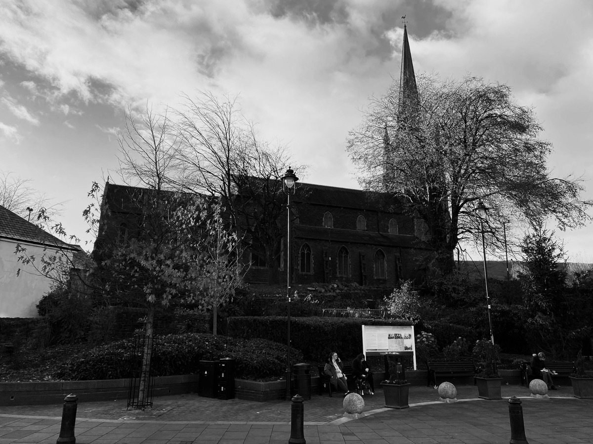
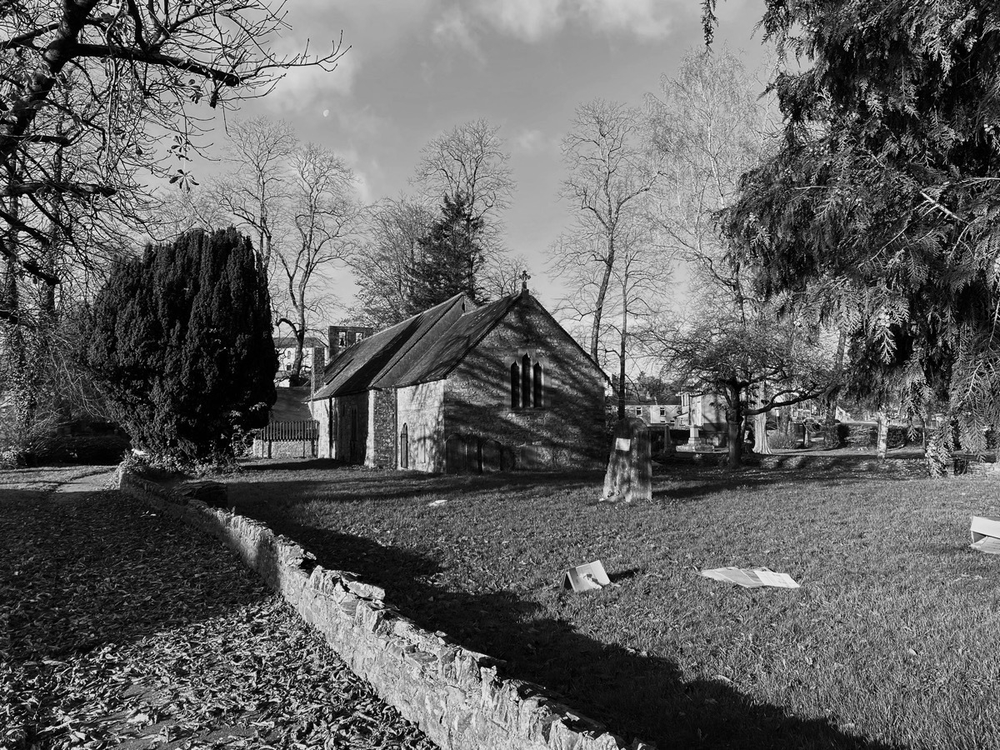
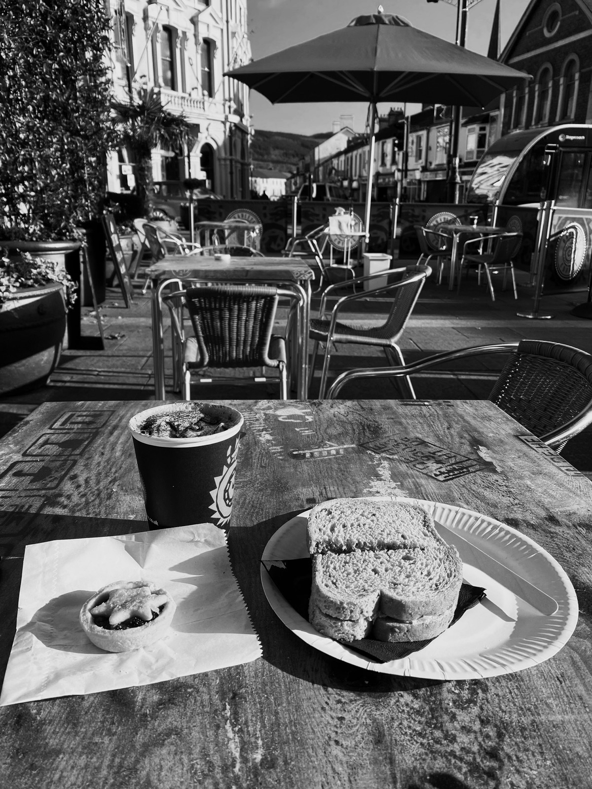
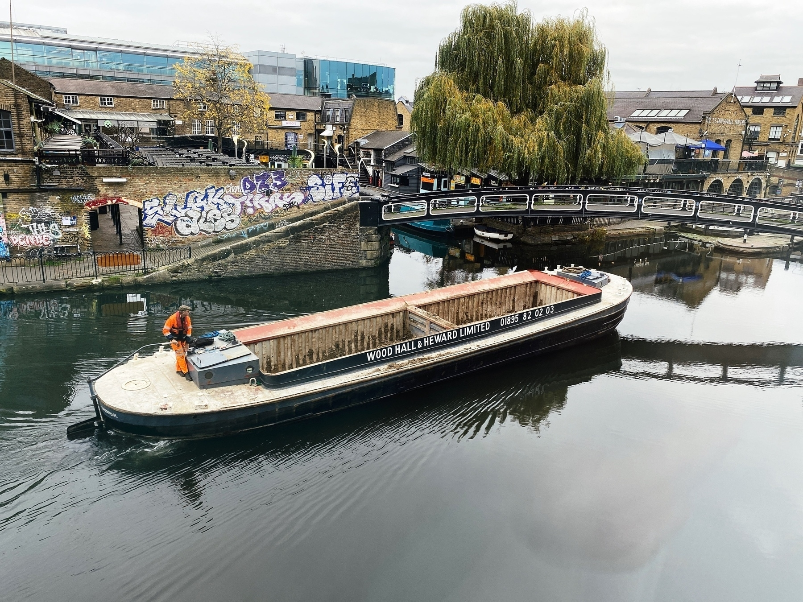
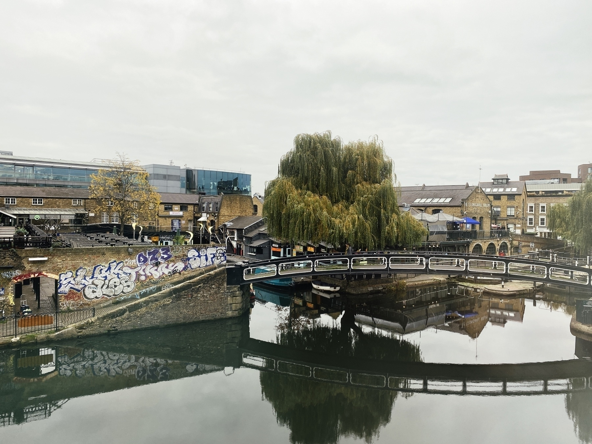
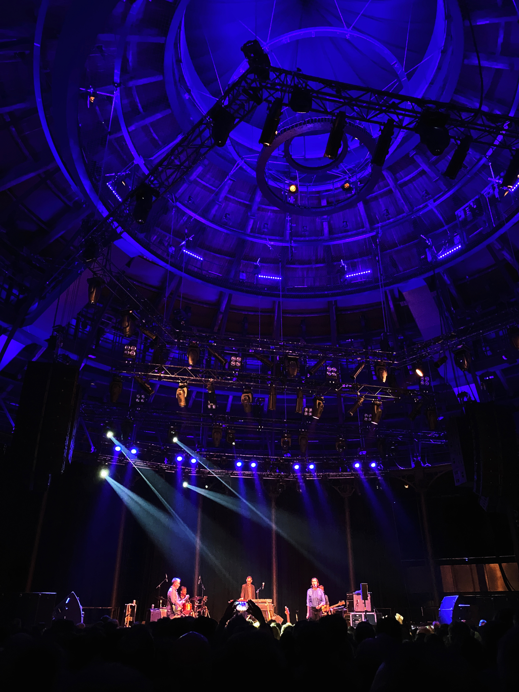
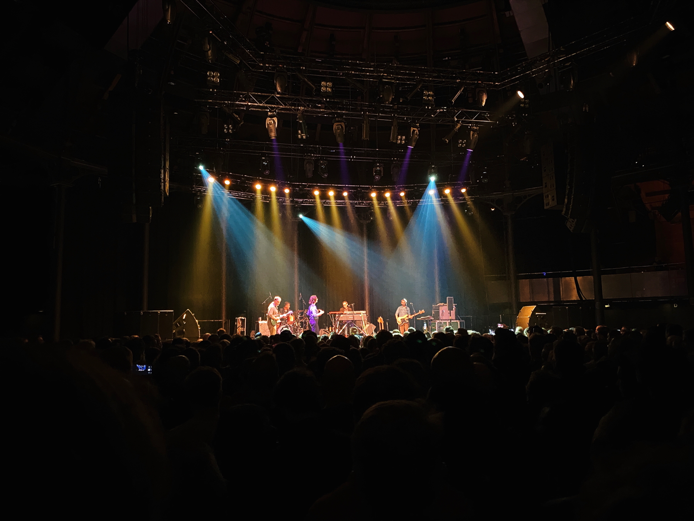
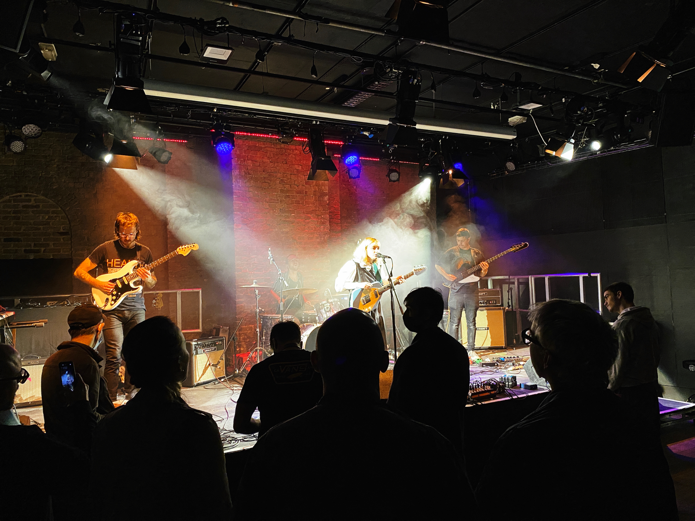
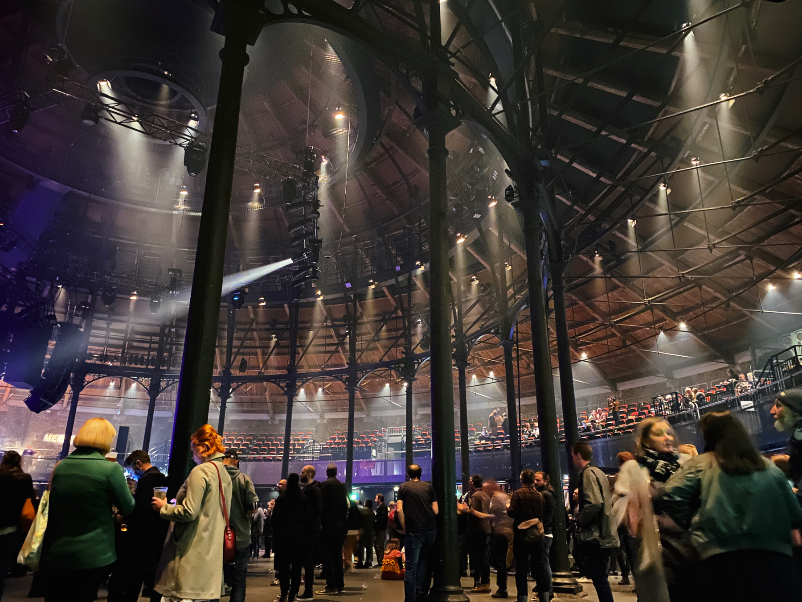

🵠My Top weekly artists: Andy Summers (22), Andy Summers & Robert Fripp (13), Furtwängler, BPO (11), Emmanuelle Parrenin & Detlef Weinrich (10) & Mary Ann Tedstone Glover (9) via tweekly.fm
Film log - watched: Godzilla: King of the Monsters, 2019 - ★★ 🎥
Disrupt Texts’ assault on Shakespeare and other classics: Money, ignorance and social backwardness 🔗
A new novelty - first train journey in almost two years - Mountain Ash Station 🚊
Check in 🗺 — Mountain Ash Railway Station 🚊
🔠Zoom in
🵠My Top weekly artists: Mary Ann Tedstone Glover (45), Itzhak Perlman (16), Andy Summers (12), Andy Summers & Robert Fripp (10) & Elbow (10) via tweekly.fm
Just found out about and starting to populate my profile at @dave’s BingeWorthy. Struggling trying to remember everything I’ve watched though 😊📺🔗
Film log - watched: Cinema Paradiso, 1988 - ★★★½ 🎥
Walking through Aberdare 📷
A short sequence of B&W photos of Aberdare, Rhondda Cynon Taf.
View from the footbridge
Aberdare Market
Cardiff Street, Aberdare
Victoria Square, Aberdare

St Elvan’s Church, Aberdare

Whitcombe Street, Aberdare
Canon Street, Aberdare
Weatheral Street, Aberdare
Aberdare Library
Library Square, Aberdare
St John the Baptist Church, Aberdare

Dare Valley Country Park
St John the Baptist Churchyard
St John the Baptist Churchyard

Aberdare Jobcentre

Bradleys Coffee Shop, Aberdare

View from the footbridge
Check in 🗺 — Bradleys Coffee Shop. Tuna sandwich, cappuccino and mince pie ☕️
🔠Zoom in
Changes! Severed my ponytail and shaved my hair and beard short 💇‍♂️

Been raking and sweeping up autumn leaves. Now drinking a Pimm’s and tonic sitting outside in the afternoon sun.
🵠My Top weekly artists: The Diasonics (9), Another Sky (6), Boy Azooga (5), Furtwängler, VPO (5) & Kynsy (5) via tweekly.fm
Film log - watched: Drunken Angel, 1948 - ★★★★★ 🎥
How Ancient Rome hit the charts 🔗🎵
Composer and academic Mary Ann Tedstone Glover has brought the music of the Roman empire back to life.
Film log - watched: Pulse, 2001 - ★★★½ 🎥
And a barge sails by 😀

Morning view over Camden Lock from hotel room window.

Stereolab and Kynsy at the Roundhouse, London, Sunday 14th November 🎵



